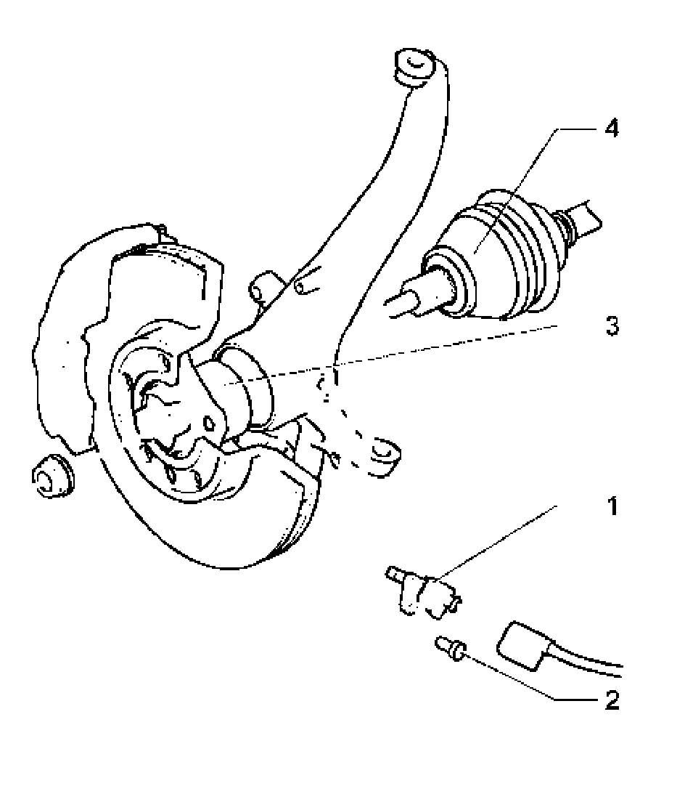
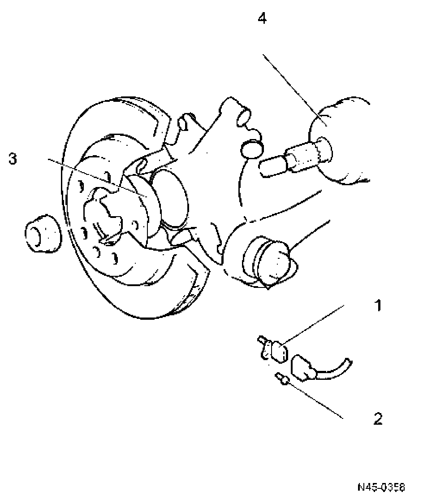

Rear Axle
ABS system components on front and rear axles, removing and installing

1. ABS wheel speed sensor
^ Before inserting sensor, clean inner surface of mounting hole and coat with Polycarbamide grease G 052 142 A2
^ Removing and installing go to Speed sensor on front axle, removing and installing
2. Hex socket head bolt, 8 Nm
3. Wheel hub with wheel bearings
^ The ABS sensor ring is installed in the wheel hub
4. Drive axle
ABS system components on rear axle, removing and installing

1. ABS wheel speed sensor
^ Before inserting sensor, clean inner surface of mounting hole and coat with Polycarbamide grease G 052 142 A2
^ Removing and installing go to Speed sensor on rear axle, removing and installing
2. Hex socket head bolt, 8 Nm
3. Wheel bearing/hub unit
^ The ABS sensor ring is installed in the wheel hub
4. Drive axle